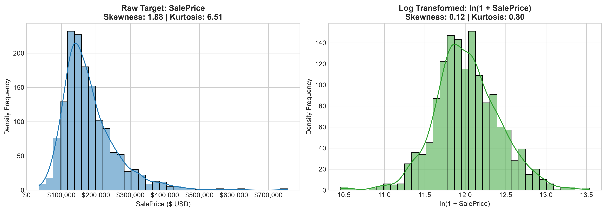
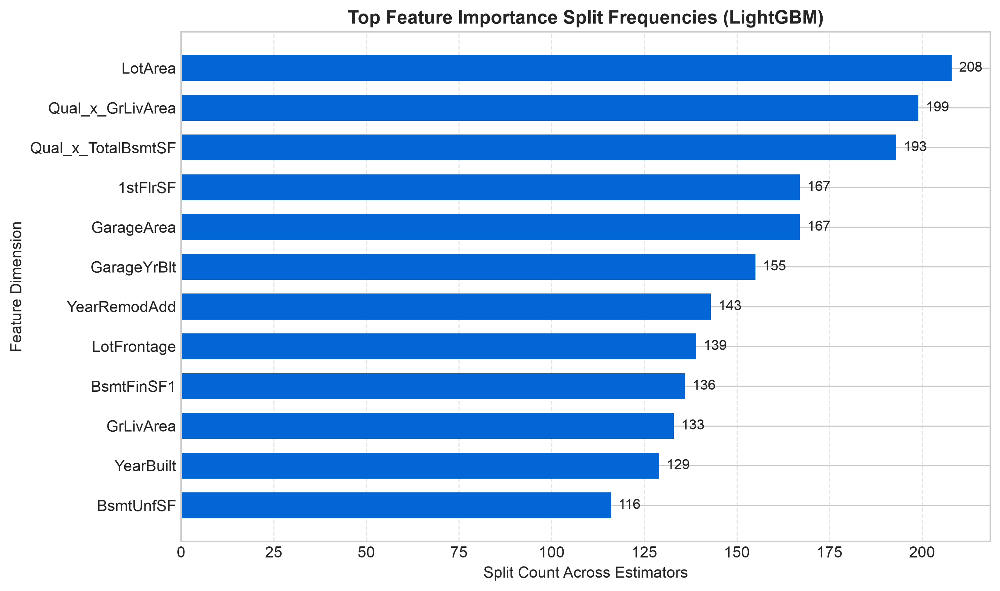
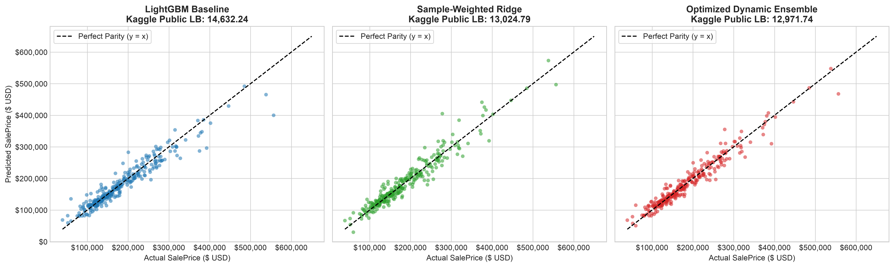

In this project, I worked on predicting residential property valuations using the Ames Housing dataset. Real estate data has specific empirical challenges, including right skewed price distributions, sparse categorical fields, and strong feature interactions. Tree models like LightGBM perform well on typical homes but fail to extrapolate on expensive properties, while linear models like Ridge regression extrapolate well but miss localized threshold steps.
To solve this, I designed an iterative pipeline that combined feature selection via Lasso, domain informed interaction terms, and a continuous logistic weighting function that smoothly blends LightGBM and Ridge predictions based on price level.
I started by looking at the raw distribution of the target variable, SalePrice. The raw target had strong positive skewness of 1.88 and kurtosis of 6.51. To stabilize variance and allow for squared error optimization, I applied a log transformation:
This log transform reduced skewness to 0.12 and kurtosis to 0.80, giving a near normal distribution.

I also removed large physical outliers, including properties with first floor area exceeding 2700 square feet, basement area exceeding 3000 square feet, and the largest leverage points in living and garage area. To check how much categorical variables explained price variation, I ran two nonparametric statistical tests:
After encoding low cardinality categorical variables, the feature space expanded to 244 columns. I applied a Lasso regression with a strong regularization penalty (α = 0.1) on standardized features to identify the primary predictors. Lasso pushed most coefficients to zero and kept only five structural features:
Because buyers value area according to quality, I engineered two multiplicative interaction variables:

I built and submitted four iterative models to the Kaggle competition leaderboard:
| Submission File | Model Architecture | Public Score | Summary |
|---|---|---|---|
| submission_baseline.csv | LightGBM Regressor | 14632.24 | Trained on processed log features. Handled standard houses well but struggled with upper boundary price points. |
| submission_dynamic_blend.csv | Initial Dynamic Blend | 14133.55 | First manual attempt at combining LightGBM and Ridge predictions. Showed an immediate improvement over the single model baseline. |
| submission_blended.csv | Cross Validated Blend | 13024.79 | Ran five fold cross validation to find the optimal fixed weight blend between LightGBM and sample weighted Ridge. The optimal weight was 0.33 for LightGBM and 0.67 for Ridge. |
| submission_optimized_dynamic_blend.csv | Optimized Dynamic Blend | 12971.74 | Final model. Replaced the static weight with a continuous logistic weight function parameterized by slope k and price threshold m, optimized using Scipy minimize. |
In the final submission, rather than using a static average across all price levels, I modeled the ensemble weight as a logistic function of price:
Using Scipy minimize on the validation set, the optimization converged to an optimal midpoint threshold m of $210,447.17 and slope k of negative 0.000005. This allowed the ensemble to weight LightGBM heavily for standard homes below $200,000, and smoothly transition to sample weighted Ridge regression for luxury homes, reaching my best Kaggle public score of 12971.74.
